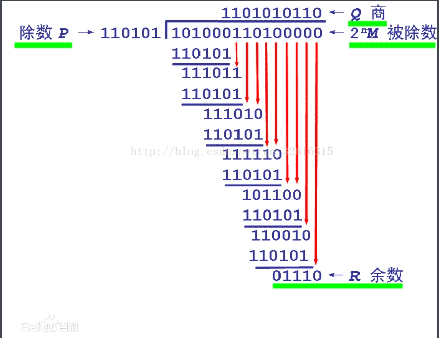
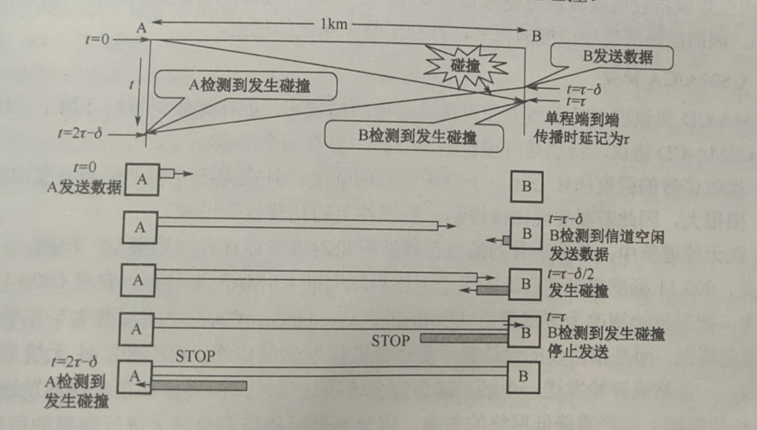
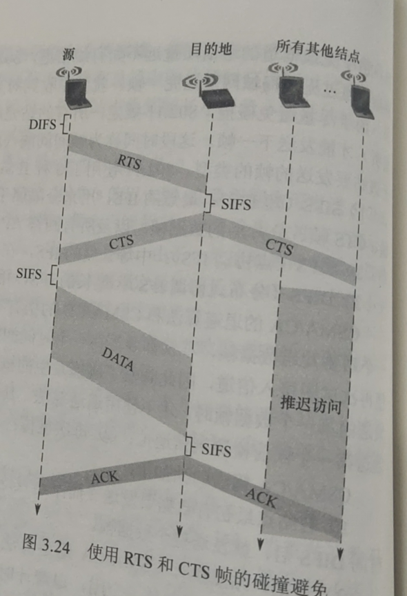
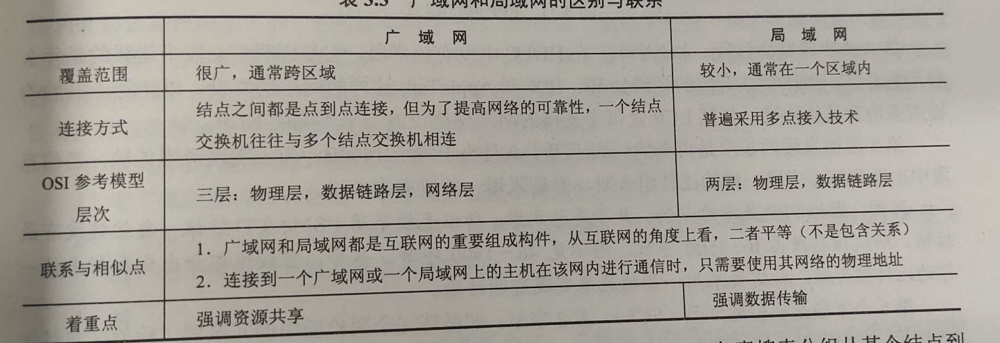
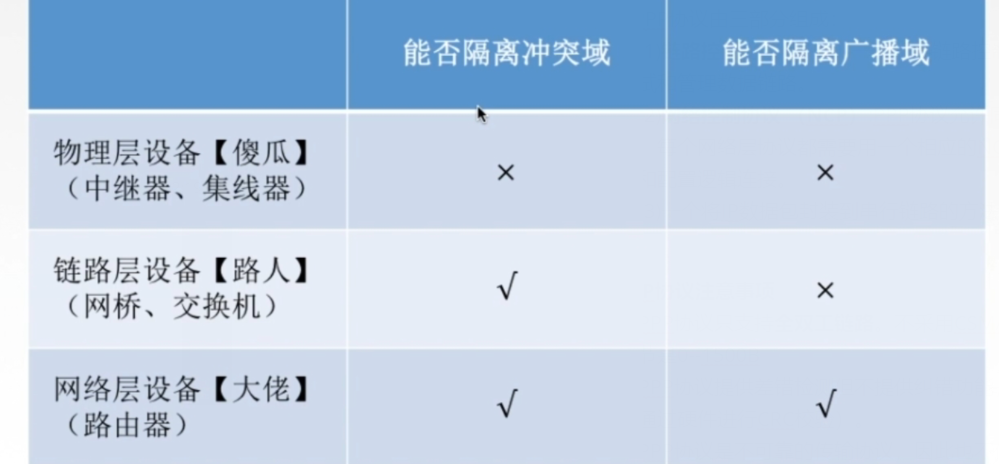
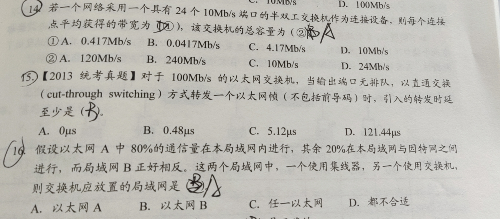
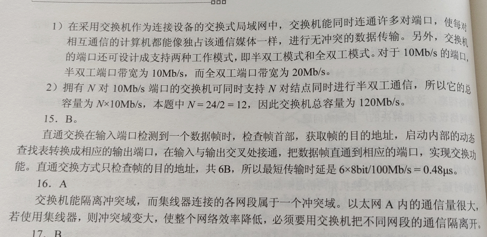

# 数据链路层的功能
# 概要
将物理层提供的可能出错的物理连接改造为逻辑上无差错的数据链路，使之对网络层表现为一条无差错的链路。
# 为网络层提供的服务
无确认的无连接服务：适用于实时通信或误码率低的通信信道。如：以太网。
有确认的无连接服务：该服务适用于误码率较高的通信信道无线通信。
有确认的面向连接服务：帧传翰过程分为三个阶段：数据链路、传输帧、释放数据链路，目的计算机对收到的每一帧都要给出确认，
没有无确认的面向连接服务
# 帧定界、帧同步与透明传输
帧定界：首部尾部的控制信息，它们的一个重要作用就是确定帧的界限。
帧同步：接收方应能从接受到的二进制比特流中区分出帧的起始和终止。
透明传输：采取有效的措施解决误认为 “传输结束” 而丢弃后面数据的问题。就是不管所传数据是什么样的比特组合，都应当能在链路上传送。
# 流量控制
问题引入：收发双方各自的工作速率和缓存空间的差异，出现发送方的发送能力大于接收方的接收能力的现象，如不对其进行流量控制就会导致数据丢失。流量控制就是通过控制发送方的发送速度，从而实现流量控制。
数据链路层控制相邻两点之间的流量，运输层控制源端到目的端的流量
# 差错控制
差错控制就是使发送方确定接收方是否正确收到由其发送的数据的方法。
位错（数据中的某些位出现错误） CRC 循环冗余码（解决位错）
帧错（帧的丢失、重复或时序等错误） 自动重传请求 ARQ（解决帧错）。
- 数据链路层的协议不包括 {.gap} 。
# 组帧
字符计数法就是指在帧头部使用一个计数字段来标明帧内字符数
该方法的缺点就是如果计数字段出错，收发双方将失去同步从而导致错误。
计数值要加上自身的一位
字符填充法使用特定字符来定界一帧的开始和结束。例如：控制字符 SOH 放在帧的最前面，表示帧的首部开始，控制字符 EOT 表示帧的结束。当信息位出现特殊字符时可以在特殊字符前添加一个转义字符 ESC 加以区分。
复杂，不兼容
零比特填充的首尾标志法（目前常用）：使用一个特定的比特模式，即 01111110 来标志一帧的开始和结束。在发送信息时，遇到 5 个连续的 1 就自动在后面加 0。当收到信息时，遇到 5 个连续的 1 就自动在后面减 0。
优点：零比特填充法很容易由硬件来实现，性能优于字符填充法。
违规编码法（目前常用）：在物理层进行比特编码时，曼彻斯特编码中比特 ”1"编码成 “高－高 “ 电平，比特”0" 编码成 “低－低 “ 电平（由于正常情况下不会出现这种情况，所以可以用这个办法来进行定界）
# 差错控制
# 检错编码
# 奇偶检验码
奇偶校验码由 n-1 位数据和 1 位校验位组成，校验位用于调节发送信息中的 1 的个数是偶数还是奇数。
# 循环冗余码

除数最高位和最低位必须为 1
凡是接收端数据链路层接受的帧都没有差错
CRC 有纠错功能，只是数据链路层仅使用它的检错功能
# 纠错编码
在数据通信的过程中，有一个方法就是添加足够的冗余信息，使得接收方能够推理出发送方实际传送的比特串。常见的纠错编码就是海明码。
（1）确定海明码的位数：
设 n 为有效信息的位数，k 为校验位的位数，则信息位 n 和校验位 k 应满足 n+k<=2^k-1（若要检测两位错，则需再增加 1 位检验位，即 k+1 位）

（2）确定校验位的分布
规定校验位在海明位号为 2^（i-1）位詈上，其余各位为信息位。

（3）分组形成校验关系
被校验数据位的海明位号等于校验该数位的各校验位海明位号之和。

（4）校验位取值
 校验位的值为对应组的所有位求异或。
校验位的值为对应组的所有位求异或。
（5）海明码的校验原理
每个校验组分别利用校验位和参与形成该校验位的信息位进行奇偶校验检查，构成 k 个校验方程：

若s3s2s1的值为000，则说明无措，否则说明有错，而且这个数就是错误的位号，如001，就说明第一位出错即H1出错。直接将该位取反就达到纠错的目的了
海明码纠错 d 位，需要码距为 2d+1 的编码方案，检错 d 位，需要码距 d+1
# 流量控制和可靠传输
停止 — 等待流量控制基本原理：每次只允许发送一帧，然后就陷入等待接收方确认信息的过程中，如果接收方不反馈应答信号，那么发送方必须一致等待，因而传输效率很低。
# 滑动窗口
发送窗口，接受窗口
滑动窗口机制特点：
1. 只有接收窗口向前滑动时，发送窗口才有可能向前滑动。
2. 接收窗口的大小为 1 时，可保证帧的有序接收。
3. 数据链路层的滑动窗口协议中，窗口的大小在传输过程中是固定的。
# 单针滑动窗口与停止 — 等待协议
发送窗口和接收窗口为 1
一种是接受时帧已经遭到破坏，解决方法是装备计时器
另一种是数据帧正确而确认帧被破坏。解决方法：发送方重传已被接受的数据帧，接收方接收到后丢弃，并重传一个确认帧。
帧缓冲区：设立目的是为了超时重发和判定重复帧的需要。帧缓冲区实现方法：发送端在发送完数据帧时，必须在其发送缓存中保留此数据帧的副本，这样才能在出差错时进行重传，只有在收到对方发来的确认帧 ACK 时，方可清除此副本。
# 多帧滑动窗口与后退 N 帧协议（GBN）
发送窗口大于 1，接收窗口为 1
接收方只会按序接收数据帧，而确认帧发送序列号最大的，按序到达的帧（累计确认，偶尔捎带确认）。
后退 N 帧协议：
优点：连续发送数据帧而提高了信道的利用率。
缺点：若信道的传输质量很差导致误码率较大时，后退 N 帧协议不一定优于停止 - 等待协议。
若采用 n 比特对帧编号，那发送窗口的尺寸最大值为 2^n-1，否则会造成接受方无法识别新帧和旧帧
# 多帧滑动窗口与选择重传协议（SR）
发送窗口大于等于 1，接收窗口大于等于 1.
选择重传协议：每个发送缓冲区对应一个计时器，当计时器超时时，缓冲区的帧就会重传。接收方会设置具有相当容量的缓冲区来暂存那些未按需正确收到的帧。一旦接受方怀疑帧出错，就会发送否定帧 NAK 给发送方要求发送方对 NAK 中指定的帧进行重传。
[接受窗口 + 发送窗口 <=2^n
接收窗口 <=2]
优点：提高了信道的利用率。
缺点：需要缓存空间来存储数据。
[设发送周期（从开始发送数据到第一个确认帧为止）为 T，发送 L 比特数据，传输速率为 C，信道利用率 =(L/C)/T
(要注意区分停止 - 等待和其他两个的区别，有坑)
信道吞吐量 = 信道利用率 * 发送速率]
确认帧是期望收到的下一个帧
# 介质访问控制
# 信道划分介质访问控制（不会冲突）（静态划分）
网络负载重，信道效率高。。。
频分多路复用（FDM）
是一种将多路基带信号调制到不同频率载波上，再叠加形成一个复合信号的多路复用技术。充分利用了传输介质的带宽（所有子信道的带宽之和不能超过信道的总带宽），但是需要在相邻信道之间加入保护频带防止子信道相互干扰。
时分多路复用 (TMD)
是将一条物理通道按时间分成若干时间片，轮流地分配给多个信号使用。但是由于计算机数据的突发性，用户对子信道的利用率不高。统计时分多路复用（STDM）采用 STDM 帧，STDM 帧不固定分配时隙 ，而按需动态地分配时隙，提高了线路的利用率。
4 用户，TMD 每人最高速率 1，STDM 是 4
现在计算机网络更多使用 TDM 而非 FDM，因为 TDM 可用于数字传输
波分多路复用（WDM）
在一根光纤中传输多种不同波长的光信号由于波长（频率）不同 ，各路光信号互不干扰，最后再用波长分解复用器将各路波长分解出来。
码分多路复用：（CDM）
使用不同的编码来区分各路原始信号的一种复用方式，与 FDM 与 TDM 不同，它既共享信道的频率，又共享时间。
码分多址（CDMA）：每个比特时间划分为 m 个短的时间槽，称为码片。通常 m 的值为 64 或者 128，每个站点被指派一个唯一的码片序列，发送 1 时，站点发送码片序列，发送 0 时，站点发送码片序列的反码。当两个或多个站点发送数据时，各路数据在信道中线性相加，为从信道中分离出各路信号，各个站点的码片序列相互正交，从而从信道中分离出各路信号。
# 随机访问介质访问控制（会冲突）
所有用户能根据自己的意愿随机地发送信息，占用信道全部速率。
网络负载重时，冲突开销高
网络负载轻，信道利用率高
# ALOHA 协议
纯 ALOHA 协议：当网络中的任何一个站点需要发送数据时，可以不进行任何检测就发送数据。在一段时间未收到确认时，南无该站点就认为传输过程中发生了冲突，发送站随机等待一段时间后再发送数据，直至发送成功。缺陷：数据碰撞的概率较大，所以网络的吞吐量很低。
时隙 ALOHA 协议：在纯 ALOHA 协议的基础上将所有站的时间同步起来，将时间划分为一段段等长的时隙，规定只能在每个时隙开始时才能发送一个帧。优点：避免了用户发送数据的随意性，减少了数据产生冲突的可能性，提高了信道的利用率。缺陷：碰撞概率还是很大。
# CSMA 协议
1 - 坚持 CSMA 协议：一个节点想要发送数据首先侦听信道。如果信道空闲，那么立即发送数据。如果信道忙，那么等待，同时继续侦听，直至信道空闲。如果发生冲突，那么随机等待一段时间再重新开始侦听。缺陷：传播延迟对协议的性能影响较大且存在碰撞现象。
非坚持 CSMA 协议：一个节点想要发送数据首先侦听信道。如果信道空闲，那么立即发送数据。如果信道忙，那么放弃侦听，等待一个随机的时间后再重复该过程。优点：降低了多个结点等待信道空闲后同时发送数据导致冲突的概率。缺陷：增加数据在网络中的延迟时间。
p - 坚持 CSMA 协议：一个节点想要发送数据首先侦听信道。如果信道忙，就持续侦听，直至信道空闲。如果信道空闲，那么以概率 p 发送据，以 1-p 概率推迟到下一个时隙。优点：降低了冲突概率同时减少了时间延迟。

# CSMA/CD 协议（重点）
载波监听多路访问 / 碰撞检测（CSMA/CD）中
+++ 载波帧听：
发送前先侦听，即每个站在发送数据之前先要检测一下总线是否有其他站点正在发送数据，若有，则暂时不发送数据，等待信道变为空闲时，再发送。
+++
+++ 碰撞检测：就是边发送边侦听，即适配器边发送数据边检测信道上信号电压的变化情况，以便判断自己在发送数据时其他站点是否也在发送数据
+++
（先听后发，边听边发，冲突停发，随机重发）
CSMA/CD 协议，适用于总线形网络或半双工网络环境，采用 CSMA/CD 协议的以太网只能进行半双工通信

争用期指以太网端到端的往返时间
最小帧长＝总线传播时延＊数据传输率＊2（即争用期乘以数据传输速率）
以太网规定的最短帧长为 64B
CSMA/CD 协议使用二进制指数退避算法解决碰撞，其算法如下：
（1）确定基本退避时间，一般为争用期（两倍的总线端到端传播时延）。
（2）定义参数 k，它等于重传次数，但 k 不超过 10，即 k=min [重传次数，10]。
（3）从离散的整数集合 [0,1,2,3,……2^k-1] 中随机取一个数 r，重传所需要的退避时间就是 r * 争用期。
（4）当重传次数达 16 次仍不能成功，说明网络太拥挤，抛弃此帧，向高层报告出错。
使用二进制指数退避算法可使重传需要推迟的平均时间随重传次数的增大而增大，降低发生碰撞的概率，有利于整个系统的稳定。
当信号传播延迟趋近于 0 时，信道利用率趋近 100%
# CSMA/CA 协议 (只能避免，不能检测)
**CSMA/CD协议适用于于使用有线连接的局域网（无线网络不能使用该协议）**
发送前侦听，边发送边侦听，一旦出现碰撞马上停止发送。在无线局域网存在以下两个问题：由于接收信号的强度往往会远小于发送信号的强度，且在无线介质上信号强度的动态变化范围很大。而且在无线通信中，并非所有的站点都能够听见对方，存在 “隐蔽站” 问题。
**RTS/CTS 帧（可选） **：可选的碰撞避免机制，主要用于解决无线网中的隐蔽站问题。
实现碰撞避免机制：预约信道：发送方在发送数据的同时向其他站点通知自己传输数据需要的时间长度，让其他站点在这段时间内不发送数据，避免碰撞。ACK 帧：所有站点在正确接收到发给自己的数据帧（除广播帧和组播帧）后，都需要向发送方发回一个 ACK 帧，如果 ACK 帧接收失败，不采取任何行动。在规定的时间内如果未收到 ACK 帧，那么认为发送失败，此时进行该数据帧的重发，直到收到 ACK 帧或达到规定重发次数为止。同时 CSMA/CA 协议也是采用二进制指数退避算法解决碰撞问题的。
帧间间隔：每次发完帧要等一会，SIFS（短）：用于 ACK,CTS, 数据帧。DIFS（长）：用于异步帧竞争访问的延时

# CSMA/CD 与 CSMA/CA 区别
（1）CSMA/CD可以检测冲突，但无法避免；CSMA/CA发送包的同时不能检测到信道上有无冲突。
（2）CSMA/CD用于总线形以太网CSMA/CA用于无线局域网802.1 la/b/g/n等。
（3）CSMA/CD通过电缆中的电压变化来检测；而CSMA/CA采用能量检测、载波检测和能量载波混合检测三种检测信道空闲的方式。
# 轮询访问介质访问控制：令牌传递协议（不会冲突）
应用于令牌环网物理上星形网，逻辑上环形网
通过一个集中控制的监控站，以循环方式轮询每个结点，再决定信道的分配令牌在固定次序中转圈，拿到令牌的结点就可以发送数据，而不会产生冲突。
适用于负载很高的广播信道。
# 局域网（选择题）
# 基本概念
局域网（LAN）是指在一个较小的地理范围内，将各种计算机外部设备和数据库系统等通过双绞线、同轴电缆等连接介质互相连接起来，组成资源和信息共享的计算机互联网络。局域网的主要特点如下：
（1）为一个单元所拥有，且地理范围和站点数目均有限。
（2）所有站点共享较高的总带宽。
（3）较低的时延和较低的误码率。
（4）各站为平等关系而非主从关系。
（5）能进行广播和组播。
局域网拓扑结构及其实现
局域网的特性主要由三个要素决定：拓扑结构、传输介质和介质访问控制方式，最重要的是介质访问控制方式，它决定着局域网的技术特性。
常见的局域网拓扑结构有星形结构、环形结构和总线形结构以及星星和总线形结合的复合型结构。传输介质有双绞线、铜缆和光纤。双绞线为局域网的主流传输介质。总线形局域网中的介质访问控制方法有 CSMA/CD、令牌总线。而令牌环是环形局域网的介质访问控制方法。局域网拓扑实现：
（1）以太网 IEEE802.3：逻辑拓扑是总线形结构，物理拓扑是星形或拓展星形结构。
（2）令牌环 IEEE802.5：逻辑拓扑是环形结构，物理拓扑是星形结构。
（3）FDDI IEEE802.8（光纤分部数字接口）：逻辑拓扑是环形结构，物理拓扑是双环结构。
IEEE802 标准定义局域网参考模型只对应于 OSI 参考模型的数据链路层和物理层。并将数据链路层拆分为逻辑链路控制子层和媒体介入控制子层。
逻辑链路控制 (LLC) 子层：向网络层提供无确认无连接、面向连接、带确认无连接、高速传送 4 种不同的连接服务类型。
媒体接入控制 (MAC) 子层：向上层屏蔽对物理层访问的各种差异，提供对物理层的统一访问接口，主要功能包括：组帧和拆卸帧、比特传输差错检测和透明传输。
# 以太网与 IEEE 802.3
# 以太网基本概念
802.3 局域网简称为以太网。
CSMA/CD
以太网采用两项措施简化通信：（1）采用无连接的工作方式，提供不可靠的服务，实现无差错接受，对差错的纠正由高层完成。（2）发送数据使用曼彻斯特编码的信号。
图标重要

计算机与外界局域网的连接是通过主机箱内插入的一块网络接口板（又称网络适配器或者网络接口卡）实现的。网卡的主要功能有：实现局域网传输介质之间的物理连接和电信号匹配，实现帧的发送与接收、帧的封装与拆封、介质访问控制、数据的编码与解码及数据缓存功能。
# 以太网的 MAC 帧
每块网卡在出厂时都有一个唯一的代码，称为介质访问控制地址（MAC 地址，前 24 位代表厂家，后 24 厂家自己规定）
由于总线上是广播通信，因此网卡从网络上每收到一个 MAC 帧，首先要用硬件检查 MAC 帧中的 MAC 地址。
同一局域网有两个相同的 MAC 地址，在网络上这两个设备都不能正确通信
MAC 帧结构组成如下：
地址：通常使用 6 字节 (48bit) 地址（目的地址，源地址总共 12 字节）
类型：2 字节，指出数据域中携带的数据应交给哪个协议实体处理
数据：46-1500 字节，包含高层的协议消息。由于 CSMNCD 算法的限制，以太网帧必须满足品小长度要求 64 字节，数据较少时必须加以填充 (0-46 字节）
填充：0-46 字节，当帧长太短时填充帧，使之达到 64 字节的最小长度
校验码 (FCS) ：4 字节，采用 CRC 循环冗余码
# 高速以太网
100BASE-T 以太网：适用于在双绞线上传送 100Mb/s 基带信号的星形拓扑结构以太网，使用 CSMA/CD 协议（半双工），支持全双工方式，支持半双工方式。
吉比特以太网：在 1Gb/s 下，用全双工和半双工两种方式工作。在半双工方式下，使用 CSMA/CD 协议。
10 吉比特以太网：使用光纤作为传输媒体，只工作在全双工方式，因此没有争用间题，也不使用 CSMA/CD 协议。
快速以太网采用，保持最短帧长不变，而将最大电缆长度减少到 100m 的方法，时以太网的数据传输速率提高至 100Mb/s
# IEEE 802.11

地址 1 : RA 接收端，接收端 基站 地址；
地址 2 : TA 发送端，发送端 基站 地址；
地址 3 : DA 目的地址，目标主机的 MAC 地址；
地址 4 : SA 源地址，发送端的 MAC 地址；
# 有固定基础设施无线局域网
802.11 标准规定无线局域网的最小构件是基本服务集 (BSS)，一个基本服务集包括一个基站和若干移动站。所有的站在本 BSS 内都可以直接通信，但在与本 BSS 外的站通信时都要通过本 BSS 的基站。
# 无固定基础设施无线局域网自组织网络
另一种无线局域网是无固定基础设施的无线局域网，又称自组织网络。由一些平等状态移动站相互通信组成的临时网络。各结点之间地位平等，中间结点都为转发结点，这些结点都具有路由器功能。移动自组织网络把移动性扩展到无线领域中的自治系统，移动自组织网络把移动性扩展到无线领域中的自治系统。
# 广域网
其通信子网主要采用分组交换技术
局域网可以通过广域网与另一个相隔很远的局域网通信

# ppp 协议
PPP 协议是使用串行线路通信的面向字节的协议，该协议应用在之间连接两个结点的链路上。PPP 协议是在 SLIP 协议的基础上发展而来的，它既可以在一部线路上传输，又可在同步线路上使用，不仅用于 Modem 链路，也可用于租用的路由器到路由器的线路。
PPP 协议由三部分组成：
(1) 链路控制协议 (LCP)：一种扩展链路控制协议，用于建立配置、测试和管理数据链路。
(2) 网络控制协议 （NCP）:PPP 协议允许同时采用多种网络层协议，每个网络层协议都需要用一个相应的 NCP 来配置，为网络层建立和配置逻辑连接。
(3) 一个将 IP 数据包封装到串行链路的方法。
PPP 协议注意事项
PPP 协议只支持全双工链路。不采用 CSMA/CD，所以信息段占的字节是 0--1500B
PPP 协议提供差错检测但不提供纠错功能， 只保证无差错接收（通过硬件进行 CRC 校验）。
PPP 协议是不可靠的传输协议，因此也不使用序号和确认机制
PPP 协议仅支持点对点的链路通信，不支持多点线路。
PPP 协议两端可以运行不同的网络层协议，但仍然可以使用同一个 PPP 通信。
PPP 协议是面向字节，的当信息字段出现和标志字段一致的比特组合时 PPP 有两种处理方法：PPP 用在异步线路（默认），则采用字节填充法。PPP 用在同步线路，则协议规定采用硬件来完成比特填充法。
# 链路层设备
# 局域网交换机及其工作原理
局域网交换机又称以太网交换机
多端口的网桥
局域网交换机工作原理：检测从以太端口来的数据帧的源和目的地的 MAC（介质访间层）地址，然后与系统内部的动态查找表进行比较若数据帧的 MAC 地址 不在查找表中，则将该地址加入查找表，并将数据帧发送给相应的目的端口。
局域网交换机特点：工作在全双工方式，碰撞地传输数据，转发表也是通过自学习算法自动地逐渐建立起来的，使用了专用的交换结构芯片，因此交换速率较高独占传输媒体的带宽。
局域网交换机优点：对工作站是透明的，管理开销低廉，简化了 网络结点的增加、移动和网络变化的操作。方便地实现虚拟局域网 (VLAN) VLAN 可以隔离冲突域，而且可以隔离广播域。
# 局域网交换机交换方式
直通式交换机：只检查帧的目的地址，数据帧可以马上就被传输出去。优点：速度快。缺点：缺乏智能性和安全性， 也无法支持具有不同速率的端口的交换。
存储转发式交换机：先将接收到的帧缓存，然后并检查数据是否正确，如果帧正确就发送出去。如果发现帧有错，那么就将其丢弃。优点：可靠性 高，并能支持不同速率端口间的转换。缺点：延迟较大。

从互联网的角度看，广域网和局域网是平等的

